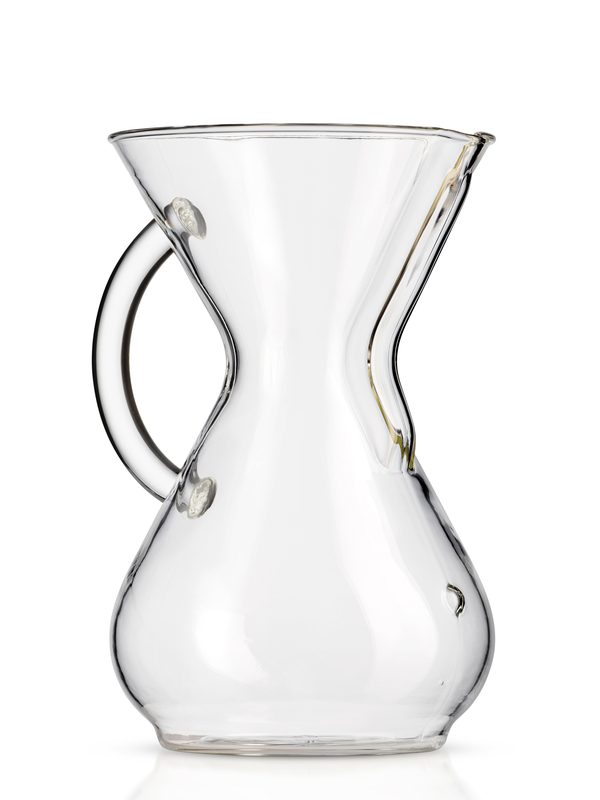
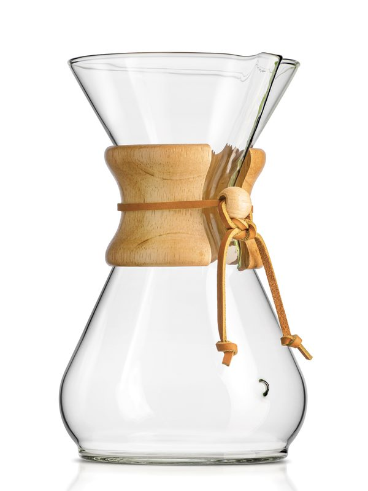
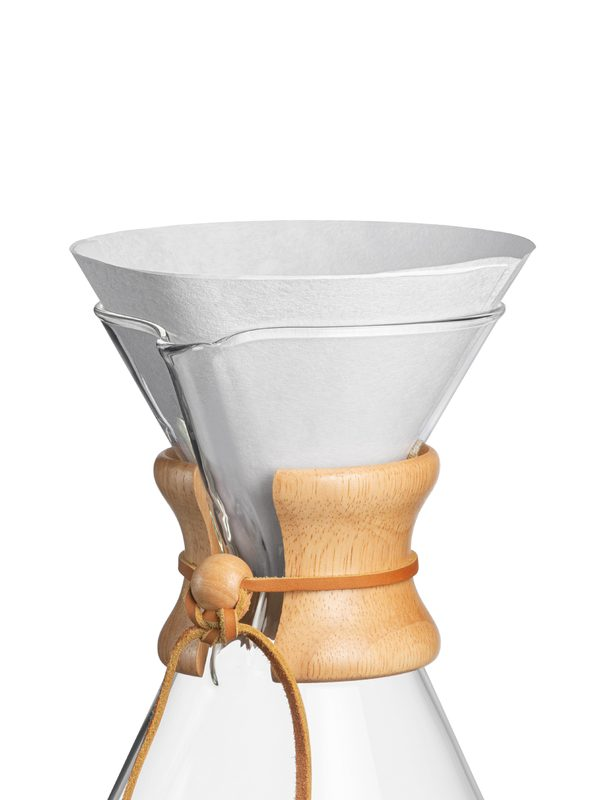
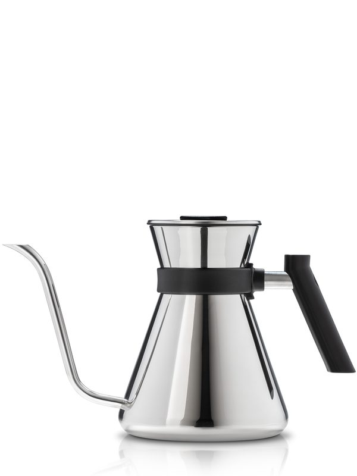

CHEMEX Gift Guide: Which Size to Give, Plus the Add-Ons Worth Including
AI-assisted guide: researched and drafted with AI tools and fact-checked against the manufacturer and official pages listed under Sources. We have not hands-on tested these products or tours; nothing here is a personal review.
A CHEMEX is an easy gift to get almost right and slightly wrong: the brewer ships without filters, sizes are counted in 5-oz "cups", and the 3-cup models take a different filter from the larger ones. This guide sorts out size and style first, then the add-ons that make it usable on day one.
Quick comparison
| Glass Handle 6-Cup (CM-6GH) | Classic 8-Cup (CM-8A) | |
|---|---|---|
| Capacity | 30 oz | 40 oz |
| Grip | Glass handle | Wood collar + leather tie |
| Filters | FP-1, FC-100, FS-100, FSU-100 | FP-1, FC-100, FS-100, FSU-100 |
| Best fit | 2 to 4 mugs, easy grip | 3 to 6 mugs, hosting |
Specs from CHEMEX product pages; see Sources. CHEMEX counts a cup as 5 oz, so compare ounces.
Pick the brewer
CHEMEX Glass Handle 6-Cup Pour-Over Coffeemaker (CM-6GH)

Best for: someone who wants the CHEMEX look with a handle to hold while pouring
- 30 oz capacity; CHEMEX counts a cup as 5 oz
- Borosilicate glass body with a glass handle in place of the wood collar and leather tie
- Takes CHEMEX Bonded filters FP-1, FC-100, FS-100 or FSU-100 (filters not included)
- CHEMEX also sells this size with gold, sapphire and other colored handles
Specs per: CHEMEX product page (accessed 2026-10-27).
CHEMEX Classic 8-Cup Pour-Over Coffeemaker (CM-8A)

Best for: households that brew for 3 to 6 people or want a second pot for guests
- 40 oz capacity (8 CHEMEX 5-oz cups)
- Borosilicate glass with a polished wood collar and leather tie, hand tied by CHEMEX
- Takes CHEMEX Bonded filters FP-1, FC-100, FS-100 or FSU-100 (filters not included)
Specs per: CHEMEX product page (accessed 2026-10-27).
Already have the 6-cup Classic on your list? We cover it in our coffee brewer comparison.
Add-ons that complete the gift
CHEMEX Bonded Filters, Pre-Folded Circles (FC-100, 100 ct)

Best for: tucking in with a 6- or 8-cup CHEMEX so it can be used on day one
- 100 pre-folded round filters
- Fit the 6, 8 and 10-cup Classic and the 5, 8 and 13-cup Handblown CHEMEX (the Glass Handle 6-cup listing names FC-100 too)
- Do not fit the 3-cup models, which use FP-2/FP-2N half moons
Specs per: CHEMEX product page (accessed 2026-10-27).
CHEMEX Stainless Steel Gooseneck Chettle (1.2 L, polished)

Best for: pour-over brewers who are still using a regular kettle (and don't cook on induction)
- 1.2 L / 40.5 oz capacity
- Gooseneck spout for a controlled pour
- Stainless steel in the CHEMEX hourglass shape; also sold in brushed and white
- For gas, conventional electric and glass stovetops; NOT induction compatible
Specs per: CHEMEX product page (accessed 2026-10-27).
CHEMEX Handblown Glass Mug (10 oz)
Best for: a matching mug to round out a CHEMEX gift
- 10 oz
- Handblown borosilicate glass, hourglass shape
- CHEMEX sells clear, gold or sapphire handle versions
Specs per: CHEMEX product page (accessed 2026-10-27).
How to put the box together
- Brewer (6-cup for a couple, 8-cup for a family or frequent hosts).
- One box of FC-100 filters, so it works on day one.
- Whole beans from a local roaster; ask them to grind medium-coarse if the recipient has no grinder.
- Optional: the Chettle if they cook on gas, electric or glass (not induction), or a mug.
FAQ
- Does a CHEMEX come with filters?
- No. CHEMEX lists the compatible filters on each product page, and the Amazon listings say filters are not included.
- Which filters fit the 3-cup CHEMEX?
- The 3-cup models take the FP-2 or FP-2N half-moon filters. The FC-100 circles fit the 6-cup and larger Classic models.
- Will the Chettle work on an induction cooktop?
- No. CHEMEX lists it for gas, conventional electric and glass stovetops and says it is not induction compatible.
Sources
- CHEMEX Glass Handle 6-Cup Pour-Over Coffeemaker (CM-6GH): CHEMEX product page (accessed 2026-10-27)
- CHEMEX Classic 8-Cup Pour-Over Coffeemaker (CM-8A): CHEMEX product page (accessed 2026-10-27)
- CHEMEX Bonded Filters, Pre-Folded Circles (FC-100, 100 ct): CHEMEX product page (accessed 2026-10-27)
- CHEMEX Stainless Steel Gooseneck Chettle (1.2 L, polished): CHEMEX product page (accessed 2026-10-27)
- CHEMEX Handblown Glass Mug (10 oz): CHEMEX product page (accessed 2026-10-27)
Prices aren't listed because they change often; check the current price with the retailer before buying. Spotted an error? See the contact details on our About page.